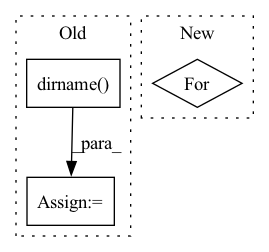

Pattern ID :34164
Before Change
protostr = base64.b64encode(proto.SerializeToString()).decode("utf-8")
template = os.path.join(
os.path.abspath(os.path.dirname( __file__) ), "stats.html"
)
html_template = path_utils.read_file_contents_as_string(template)
h = html_template.replace("protostr", protostr)
After Change
magic: Whether to render in a Jupyter notebook or not.
datasets = []
for output_name, artifact_view in step.outputs.items():
df = artifact_view.read()
datasets.append({"name": output_name, "table": df})
h = self.generate_html(datasets)
self.generate_facet(h, magic)In pattern: SUPERPATTERN
Frequency: 3
Non-data size: 3
Instances Fragment ID: 97596053
Project Name: maiot-io/zenml
Commit Name: e51baa83069396f3ff822267e5250f84af1ad467
Time: 2021-11-14
Author: htahir111@gmail.com
File Name: src/zenml/post_execution/visualizers/facet_statistics_visualizer.py
M Class Name: FacetStatisticsVisualizer
N Class Name: FacetStatisticsVisualizer
M Method Name: visualize(3)
N Method Name: visualize(3)
M Parent Class:
N Parent Class:
M File Name: src/zenml/post_execution/visualizers/facet_statistics_visualizer.py
N File Name: src/zenml/post_execution/visualizers/facet_statistics_visualizer.py
M Start Line: 39
M End Line: 65
N Start Line: 47
N End Line: 52
Before Change
):
blocks = []
model_dir = os.path.dirname( os.path.abspath(__file__))
blocks.append(
ReplicateBlock(
param_file=os.path.join(model_dir, "cnn_block.yaml"),
yaml_overrides=cnn_overrides,After Change
):
blocks = []
for block_index in range(cnn_blocks):
blocks.extend(
[
Conv(
out_channels=cnn_channels[block_index], Fragment ID: 97596055
Project Name: speechbrain/speechbrain
Commit Name: 1565516b2904a568854ed9b96cab17fd13450540
Time: 2020-05-27
Author: plantinga.peter@gmail.com
File Name: speechbrain/lobes/models/CRDNN.py
M Class Name: CRDNN
N Class Name: CRDNN
M Method Name: __init__(15)
N Method Name: __init__(10)
M Parent Class: Sequential
N Parent Class: Sequential
M File Name: speechbrain/lobes/models/CRDNN.py
N File Name: speechbrain/lobes/models/CRDNN.py
M Start Line: 57
M End Line: 102
N Start Line: 65
N End Line: 133
Before Change
def main() -> int:
exclude: List[str] = []
current_dir = os.path.dirname( os.path.abspath(__file__))
files = sorted(map(lambda x: x.relative_to(current_dir), Path.cwd().rglob("*.py")))
files = list(filter(lambda x: not any([str(Path(ele)) in str(x) for ele in exclude]), files))
return_codes = Parallel(n_jobs=os.cpu_count())(delayed(run_mypy)(file) for file in files)After Change
// otherwise report.
submodule_name = "innereye-deeplearning"
files = set(current_dir.glob("*.py"))
for path in current_dir.glob("*"):
if path.name != submodule_name:
files.update(path.rglob("*.py"))
file_list = list(files)
return run_mypy(sorted(str(file) for file in file_list)) Fragment ID: 97596056
Project Name: microsoft/innereye-deeplearning
Commit Name: 1136e23352ac8b4e93705b96bdac9f08120f8399
Time: 2020-08-14
Author: dacart@microsoft.com
File Name: mypy_runner.py
M Class Name: AnonimousClass
N Class Name: AnonimousClass
M Method Name: main(0)
N Method Name: main(0)
M Parent Class:
N Parent Class:
M File Name: mypy_runner.py
N File Name: mypy_runner.py
M Start Line: 19
M End Line: 31
N Start Line: 52
N End Line: 65